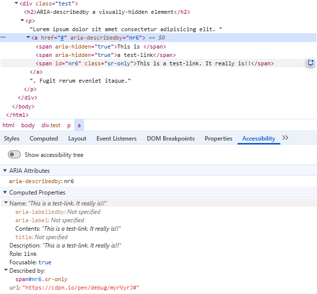

# ARIA 101 - Praktische Beispiele Jens Grochtdreis | unkonf 2026, Mannheim <!--s--> ## Was soll das alles? POUR - Perceivable (Wahrnehmbar) - Operable (Bedienbar) - Understandable (Verständlich) - Robust (Robust) <!--s--> ## Eines vorweg Wir haben **keine** Chance, einen Screenreader in irgendeiner Weise zu erkennen und unseren Code darauf anzupassen. Das wird sich nie ändern. <!--s--> ## Wichtig zu wissen <!--v--> - Screenreadernutzer benötigen die gleichen Infos wie Sehende. - Alle <mark>interaktiven Elemente</mark> müssen mit der Tastatur bedienbar sein. - Der <mark>Tastaturfokus</mark> muss deutlich sichtbar sein. - Wenn eine Aktion passiert, die für Sehende sichtbar ist, müssen wir Screenreadernutzer informieren. - Semantisch korrektes HTML ist die Grundlage. - Manchmal genügt das nicht und dann müssen Infos (Semantik) per ARIA hinzugefügt werden. - ARIA ist eine **Ergänzung** zu HTML. - ARIA **repariert nicht** HTML. - ARIA hilft uns bei Blinden und Sehgeschädigten weiter, nicht bei anderen Behinderungen. <!--s--> ## Erste Regel von ARIA **Wenn es ein passendes Tag gibt, dann sollte es verwendet werden.** (**Don't use ARIA!**) Das ist korrekt: ```html <button>Klick mich</button> <h2>Ich bin eine Überschrift</h2> ``` Das ist falsch: ```html <div role="button" tabindex="0">Klick mich</div> <div role="heading" aria-level="2">Ich möchte eine Überschrift sein!</div> ``` <!--v--> ### Rollen können nicht zaubern Eine ``role="button"`` erstellt keinen Button. <mark>Der Screenreader sagt das Konstrukt nur als Button an</mark>. Die notwendigen Features eines Buttons kommen **nicht automatisch** mit. <!--v--> ### Listen sind hilfreich Eine Liste mit <mark>einem</mark> Listenelement ist recht sinnlos. Haben wir mehrere Elemente in einer Komponente, dann bietet sich eine Liste zur Organisation oft an. Screenreader kommunizieren die Menge der Inhalte und den Standort des Cursors innerhalb der Liste. <!--v--> ### guter Code ```html <ul> <li><button>Klick mich</button></li> <li><button>Klick mich ebenfalls</button></li> <li><button>Du weisst schon...</button></li> </ul> ``` <!--v--> ### weniger guter Code ```html <ul> <li> <button>Klick mich</button> <button>Klick mich ebenfalls</button> <button>Du weisst schon...</button> </li> </ul> ``` <!--v--> ### Semantisches HTML bedeutet auch korrektes HTML Es gibt Elemente, die dürfen nicht in anderen Elementen verwendet werden. - ``<button>`` darf nicht in einem ``<a>``-Element verwendet werden. - ``<a>`` darf nicht in einem ``<button>``-Element verwendet werden. - Ein ``<div>`` oder eine Headline dürfen nicht in einem ``<button>``-Element verwendet werden. Details siehe bspw. beim Button in den [MDN Web Docs](https://developer.mozilla.org/en-US/docs/Web/HTML/Element/button) unter "Technical Summary/ Permitted content". <!--s--> ## Zweite Regel von ARIA **Do not change native semantics, unless you really have to.** Das ist falsch: ```html <button role="radio">Auswahloption 1</button> ``` Das ist korrekt: ```html <label for="radio1">Auswahloption 1</label> <input type="radio" name="radiogaga" id="radio1"> ``` <!--v--> ### Designprobleme müssen mit CSS gelöst werden Auch wenn der Radio-Button wie ein Button aussieht, ist er ein ``<input type="radio">``. Um eine ungewöhnliche Optik zu erzeugen, versteckt man am Besten das Input-Element mit ``class="sr-only"``. Die Gestaltung läuft dann über das Label-Element. Warum das input-Element nur visuell versteckt wird, sehen wir in der vierten Regel. <!--v--> ### Rollen Nicht für jede Komponente gibt es ein passendes HTML-Tag. In diesen Fällen kann man mit ARIA-Rollen die Semantik nachrüsten. Sehende bekommen oft aus dem Kontext die Bedeutung einer Komponente mit. <!--s--> ## Rollen, States und Properties <!--v--> ### Eine Auswahl ARIA-Rollen - alert - alertdialog - progressbar - search - spinbutton - status (live region!) - switch - tab - tablist - tabpanel - toolbar - tooltip [Mehr gibt es wie immer bei MDN](https://developer.mozilla.org/en-US/docs/Web/Accessibility/ARIA/Reference/Roles). <!--v--> ### States and properties - eine Auswahl - aria-busy - aria-controls - aria-current - aria-describedby - aria-disabled - aria-expanded - aria-errormessage - aria-haspopup - aria-hidden - aria-labelledby - aria-invalid - aria-required - aria-valuemax - aria-valuemin [Eine vollständige Übersicht gibt es bei MDN](https://developer.mozilla.org/en-US/docs/Web/Accessibility/ARIA/Reference/Attributes) <!--s--> ## Dritte Regel von ARIA Alle mit ARIA ausgezeichneten Bedienelemente müssen mit der Tastatur erreichbar sein. Allein deshalb ist es sehr hilfreich, die Standard-HTML-Tags zu verwenden. Denn die Browser haben alle notwendigen Usability-Features bereits integriert. <!--s--> ## Vierte Regel von ARIA Fokussierbare Elemente dürfen nicht vor Screenreadern versteckt werden. Beides ist falsch: ```html <button role="presentation">Klick mich</button> <button aria-hidden="true">Klick mich</button> ``` Das ist **nicht besser**: ```html <div aria-hidden="true"> <button>press me</button> </div> ``` <!--s--> ## Verstecken | Code | Bedeutung | |:------|:----| | ``aria-hidden="true"`` | versteckt das Element vor dem Screenreader. Es hat keine visuelle Auswirkung. | | ``class="sr-only"`` | Versteckt das Element visuell, aber es bleibt für den Screenreader zugänglich. | | ``display: none`` | versteckt das Element visuell und vor dem Screenreader. | <!--s--> ## Der **Accessible Name** Wie wird ein Inhalt/Bedienelement an den Screenreader kommuniziert? <p></p> <!--v--> ### Hierarchie 1. ``aria-labelledby``: Hat die höchste Priorität. Verwendet den Textinhalt des referenzierten Elements. Das kann auch ein verstecktes Element sein. 2. ``aria-label``: Wird verwendet, wenn aria-labelledby fehlt 3. Natives HTML-Label: Für Formularsteuerelemente das zugehörige <label>-Element (über for/id oder implizites Wrappen). 4. ``title``-Attribut: Gilt allgemein als unzuverlässig und wird nicht empfohlen, außer bei ``<iframe>``-Elementen, wo es erforderlich ist. 5. Fallbacks: Dazu gehören Platzhaltertext, implizite Beschriftungen oder innerer Inhalt (bei Schaltflächen/Links) bspw. ein ``<span class="sr-only">Screenreader-Inhalt</span>``. <!--v--> ## Beispiele mit Buttons ````html <button type="button"> <svg> <use xlink:href="#cancel"></use> </svg> <span class="sr-only">Delete</span> </button> ```` ````html <button aria-labelledby="label-delete-button" type="button"> <svg> <use xlink:href="#cancel"></use> </svg> </button> <span class="sr-only" id="label-delete-button">Ich bin ein externes Label</span> ```` [Diese Seite](https://es-d-1870359320260703-019f1e0a-8b8b-7433-82dd-ba34bd1c31bb.codepen.dev/) mit dem Accessibility-Tab der Devtools anschauen. <!--s--> ## Noch mehr Beispiele <!--v--> ### Accessibility-Tab der Devtools    <!--v--> ### So darf ein Button nicht strukturiert sein ````html <button type="button"> <div> <div><time></time></div> <div><span></span></div> </div> <div><img></div> <div> <h4><span></span></h4> <span></span> <span></span> </div> <span aria-hidden="true"> <svg aria-hidden="true" focusable="false"></svg> </span> </button> ```` <!--v--> ### So ist es besser ````html <button type="button"> <span> <span><time></time></span> <span><span></span></span> </span> <span><img></span> <span> <span><span></span></span> <span></span> <span></span> </span> <span aria-hidden="true"> <svg aria-hidden="true" focusable="false"></svg> </span> </button> ```` <!--v--> ```html <!-- FALSCH --> <span role="button">Formular absenden</span> <!-- RICHTIG --> <button type="submit">Formular absenden</button> ``` ```html <!-- Falsch --> <span role="checkbox">Falsche Checkbox</span> <!-- RICHTIG --> <label for="y">Echte Checkbox</label> <input type="checkbox" name="y" id="y"> ``` ```html <!-- FALSCH --> <span role="link" data-target="http://google.com">Falscher Link</span> <!-- auch FALSCH --> <a href="http://google.com" role="link">Übermotivierter, echter Link</a> <!-- unnötige Stolperfalle --> <a href="http://google.com" title="Dieser tolle Text wird vorgelesen!">Dieser Linktext erreicht den Screenreader leider nicht!</a> <!-- RICHTIG --> <a href="http://google.com">Echter Link</a> ``` <!--s--> ## Das war's  <div class="list-col"> <ul> <li><a href="https://grochtdreis.de">Grochtdreis.de</a></li> <li><a href="https://css-weblog.de">CSS-Weblog.de</a></li> <li><a href="https://jens.cooking">Meine Kochrezepte</a></li> <li><a href="https://mastodon.social/@jensgro">@jensgro@mastodon.social</a></li> </ul> </div>